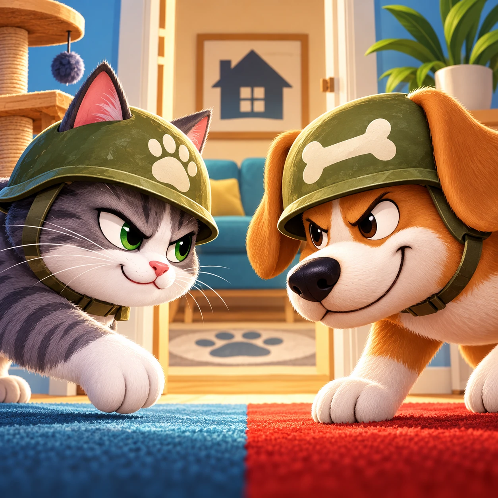
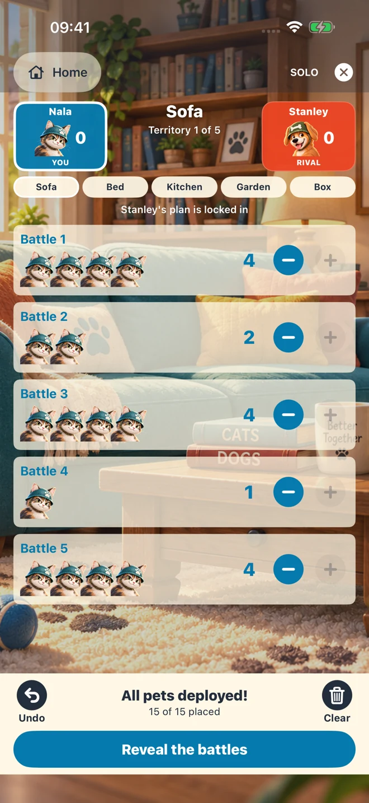
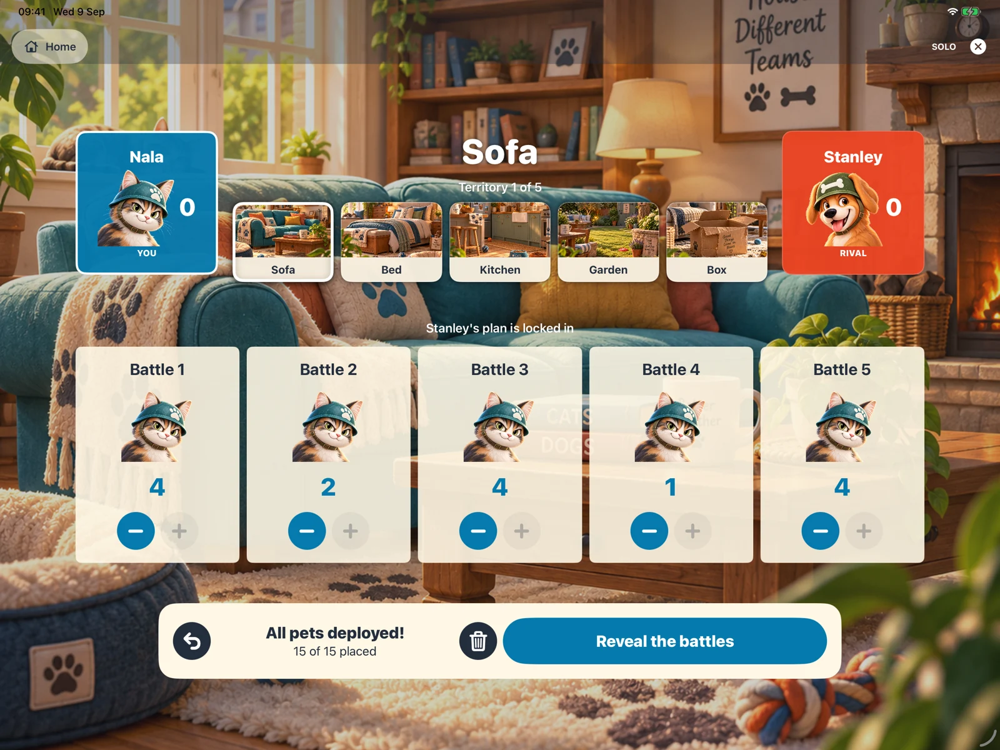

A quiet battle of wits.
Face a computer rival that locks in its plan before you place your pets. Take your time and make your move.
A little rivalry. A lot of strategy.
Lead the cats or dogs in a secret contest for the comfiest corners of the house. Fifteen pets. Five battles. One clever plan.
Discover the gameComing to iPhone and iPad

Who rules the house?Make every pet count
For each territory, you and your rival secretly divide 15 pets between five battles. Spread them out, focus your forces, or try a plan your rival won’t expect.
Compete for the Sofa, Bed, Kitchen, Garden and Box. After all five territories, the strongest claim wins the house.

Play your way
Face a computer rival that locks in its plan before you place your pets. Take your time and make your move.
Two players, one iPhone or iPad. Take secret turns, pass the device, and reveal your plans together.
Host or join a nearby game on two iPhones or iPads. Each player makes their plan on their own screen.
Meet Colonel Blotto
Winning one battle by a landslide can leave you outnumbered everywhere else.
Blotto Pets is inspired by Colonel Blotto, the classic game theory problem about dividing limited resources across competing contests. The challenge is deciding where to commit—and anticipating where your rival will do the same.
No maths background required. Just a little curiosity and a willingness to change your plan.
Room for the whole rivalry
Play on iPhone or iPad, in portrait or landscape, with light and dark appearances.

A helping paw
Open How to Play on the game’s home screen for the rules.
For support, include your device model, iOS or iPadOS version, Blotto Pets version, and a short description of the issue.
Contact: cardicap@icloud.com
Use the same version of Blotto Pets on both devices. Keep them nearby, enable Wi-Fi and Bluetooth, and allow local-network access when asked. One player chooses Host a game; the other chooses Join a game. Nearby play is not internet matchmaking.
Yes. Solo and pass-and-play work without an internet connection. Nearby multiplayer needs local connectivity between the two devices.
Choose your favourite. Pet appearances don’t change the rules or give a gameplay advantage.
No account is needed. The app has no advertising or third-party analytics in this release. Read our privacy policy for details about local saves and nearby multiplayer.